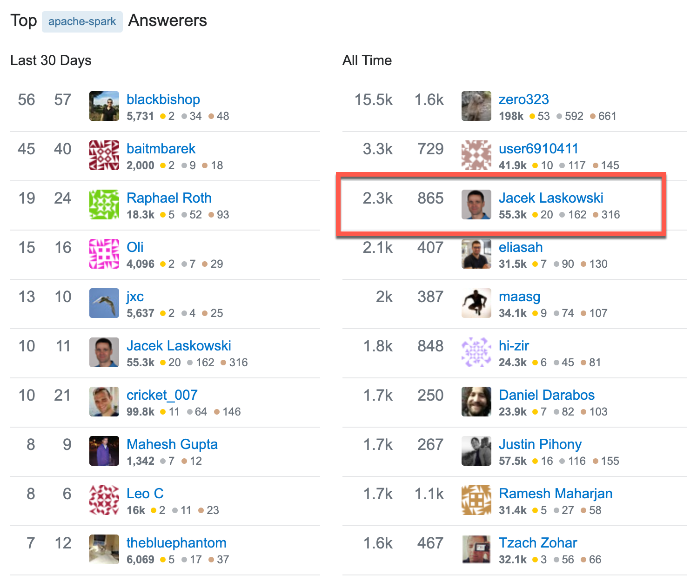

Apache Spark™
Developer Certification Workshop 5 Days
@jaceklaskowski / StackOverflow / GitHub
Books: Mastering Apache Spark / Mastering Spark SQL / Spark Structured Streaming
Jacek is best known by the online books:
Jacek is active on StackOverflow

Prerequisities
Be prepared to get the most out of the workshop
Prerequisities / Experience
- Hands-on programming experience using Scala
- Experience developing Spark applications
Prerequisities / To Be Installed
- Java Platform, Standard Edition (Java SE) 8
- Apache Spark
- IntelliJ IDEA Community Edition with Scala plugin
- sbt
- Linux or macOS preferred
- Consult Running Spark Applications on Windows when on MS Windows
In-Class Preparations
Make Instructor's Life Slightly Easier. Thanks!
Introduce Yourself
- First name
- What's your experience with Spark?
- Any production experience with Spark?
- What certification do you think of?
- Have you already signed up?
Addendum
- Put your name on paper in front of you
- Stick to your laptop if possible
- Lunch at 12:45pm